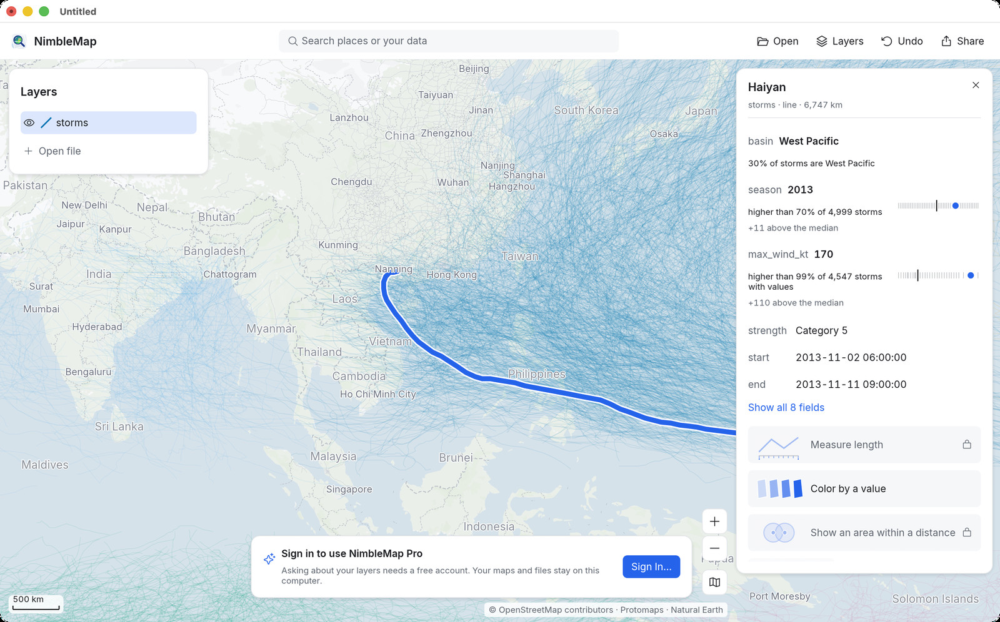
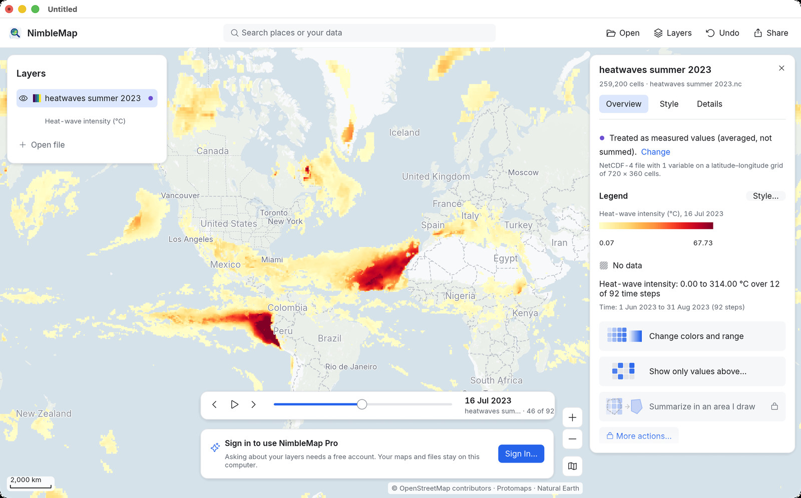
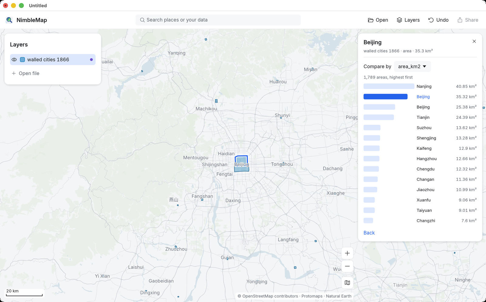
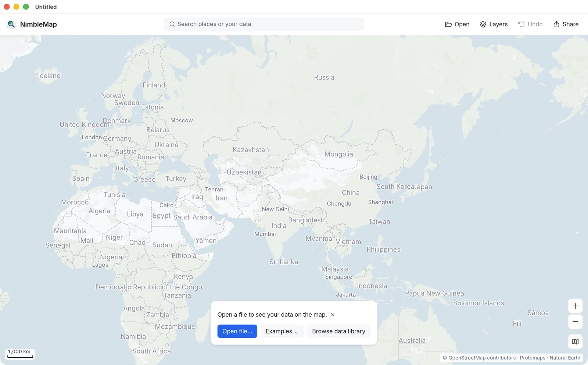

Ayuda
Empieza con una historia, no con una caja de herramientas
Cada flujo de trabajo de abajo usa un ejemplo que viene con la aplicación, así que puedes seguirlo ahora mismo. Cada paso usa los botones tal como aparecen en la aplicación.

Tifones: las tormentas más fuertes
Abre 4999 trayectorias de tormentas, encuentra el tifón Haiyan, mira en qué puesto queda y conserva solo las tormentas de categoría 5.

La ola de calor de 2023 a lo largo del tiempo
Reproduce un verano de datos climáticos diarios con la barra de tiempo, lee celdas sueltas y exporta una imagen de mapa terminada.

Ciudades amuralladas de China, 1866
Pon las murallas de las ciudades sobre imágenes de satélite, ordénalas por tamaño, filtra las capitales de provincia y comparte el resultado.
La ventana en un minuto

- Barra de herramientas (arriba): el cuadro de búsqueda Search places or your data (Buscar lugares o tus datos) y, después, Open (Abrir, ⌘O), Layers (Capas, ⌘L), Undo (Deshacer, ⌘Z) y Share (Compartir, ⌘E).
- Panel de capas (izquierda): todo lo que has abierto. El ojo muestra u oculta una capa; arrastra para cambiar el orden; haz clic derecho para ver más opciones.
- Ficha (derecha): aparece cuando haces clic en algo. Muestra los datos, qué lugar ocupa ese elemento entre los demás y hasta tres botones sugeridos. La ficha de una capa tiene las pestañas Overview (Resumen), Style (Estilo) y Details (Detalles).
- Controles del mapa (abajo a la derecha): Zoom in (Acercar), Zoom out (Alejar) y el botón del mapa base. La barra de escala está abajo a la izquierda.
- Todo se puede deshacer: cada cambio, desde un color hasta un filtro o quitar una capa, es un paso de Undo. Tus archivos nunca se modifican.
Abrir tus propios archivos
Arrastra archivos a NimbleMap o usa Open. NimbleMap lee CSV y Excel (con columnas de latitud y longitud), GeoJSON, Shapefile, GeoPackage, KML/KMZ, GPX, GeoTIFF y NetCDF. Si la aplicación ha tenido que suponer algo, como qué columnas son las coordenadas, la ficha lo dice en una línea con Change (Cambiar) al lado. Los puntos copiados de Amap, Tencent o Baidu Maps se pueden trasladar a coordenadas GPS; consulta GCJ-02.
¿Alguna palabra que no conoces?
El glosario explica las palabras de los mapas con un lenguaje sencillo e indica dónde aparece cada una en la aplicación.
Comentarios
Envía comentarios: Ayuda › Enviar comentarios… en la app, o en GitHub Discussions.
Privacidad
Comentarios desde la app. Cuando eliges Ayuda › Enviar comentarios…, NimbleMap envía lo que escribes a nuestro servicio de comentarios, que lo publica en GitHub Discussions (github.com/kangning-huang/NimbleMap/discussions), donde cualquiera puede leerlo y responder. La publicación contiene tu mensaje, tu título si pusiste uno, el tipo de comentario y el idioma de la interfaz. Incluye los números de versión de la app y de macOS solo si dejas marcada la casilla Incluir la versión de la app y de macOS. Nunca contiene tu dirección de correo, tu nombre, tu cuenta, tus mapas ni tus archivos. No necesitas una cuenta de GitHub.
Si das una dirección de correo, se guarda de forma privada en nuestro servidor junto al enlace a tu publicación, solo para poder responderte. Nunca se muestra públicamente. La borramos cuando termina la conversación, y como máximo al cabo de un año; escríbenos si quieres que la borremos antes.
Si has iniciado sesión, la publicación solo indica que viene de un usuario con sesión iniciada, y nuestro servidor guarda de forma privada el ID de tu cuenta junto al enlace a tu publicación, para poder hacer seguimiento. Nunca se muestra públicamente, y lo borramos cuando termina la conversación, y como máximo al cabo de un año.
Para evitar el spam, la app envía un número de instalación aleatorio creado en tu ordenador, y nuestro servidor ve tu dirección de red. Ambos se guardan solo como hashes con clave de un solo sentido, para contar, y se borran al cabo de una semana.